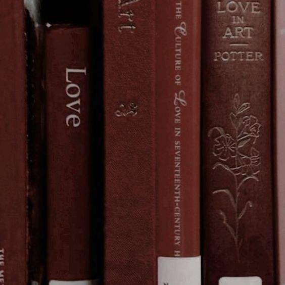
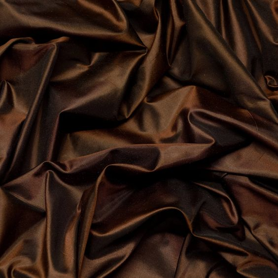

Shades of brown
Shades of cool
The color brown is defined as a composite color as well as a darker shade of orange. In the CMYK color model, brown is the result of black and orange combined while in the RGB color model, you get brown by combining red and green.

History
HISTORY OF THE COLOR BROWN
Brown is one of the first colors humans used in art. Scientists have found cave paintings, made with a clay pigment called umber, dating back to 40,000 BC. The ancient Egyptians used umber to depict skin. The ancient Greeks used this pigment to paint amphorae and vases. Umber wasn't the only pigment that the ancient Greeks used. They, and the ancient Romans, developed sepia, a reddish-brown ink taken from a variety of cuttlefish. The Romans associated brown with the lower classes or barbarians. Their term for the urban poor came from the word pullati which literally means "those dressed in brown". In the Middle Ages, poor English people were required to wear russet, a coarse homespun cloth made of wool and dyed with woad and madder which gave it a muted grey or brown shade. Painters rarely used brown during this period as they preferred brighter colors like red, blue, and green. Brown only became popular among painters when the Renaissance came. Artists of this time used four types of brown: raw umber, the dark brown clay mined around Umbria, in Italy, raw sienna, a reddish-brown earth mined near Siena, in Tuscany; burnt umber, the Umbrian clay heated until it turned a darker shade, and burnt sienna, earth heated until it turned a dark reddish-brown.
Shades
RED-BROWN

As its name implies, red-brown is characterized by its vivid red color. Despite this fact, this color was selected to be the default "brown" for web colors.
Aesthetic
BURNT UMBER

Burnt umber is a strong reddish brown. It's produced by heating raw umber, dehydrating its iron oxide content, and changing it into reddish hematite.
Aesthetic
MAROON
Maroon has a deep reddish-brown color. It takes its name from the French word marron for "chestnut". This color is also considered a shade of red.
Aesthetic
BUFF
Buff is a light or pale yellow-brown shade. It got its name from the color of buffed leather. This color descriptor was first used in the London Gazette of 1686.
Aesthetic
SANDY BROWN

Sandy brown is characterized by its moderate orange color. As its name suggests, this shade of brown is similar to the color of some sands. Sandy brown is also a web color that first came into use in 1987.
Aesthetic
KHAKI
Khaki is a grayish-yellow brown. The first recorded use of khaki as a color name in English was in 1848.
Aesthetic